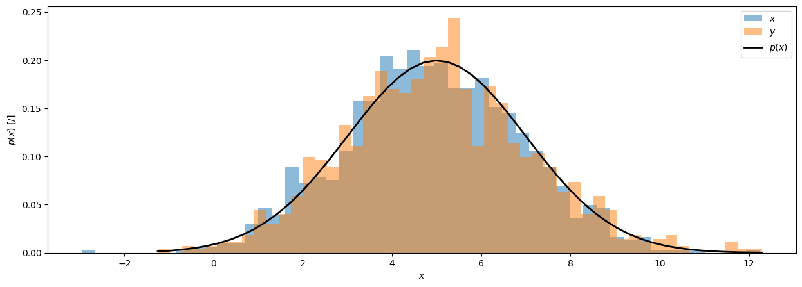
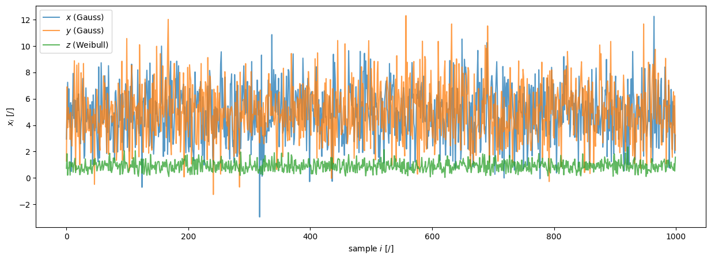
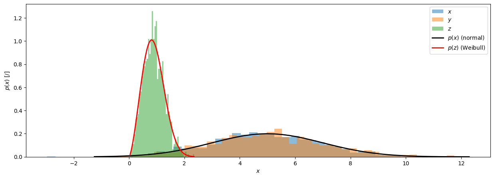
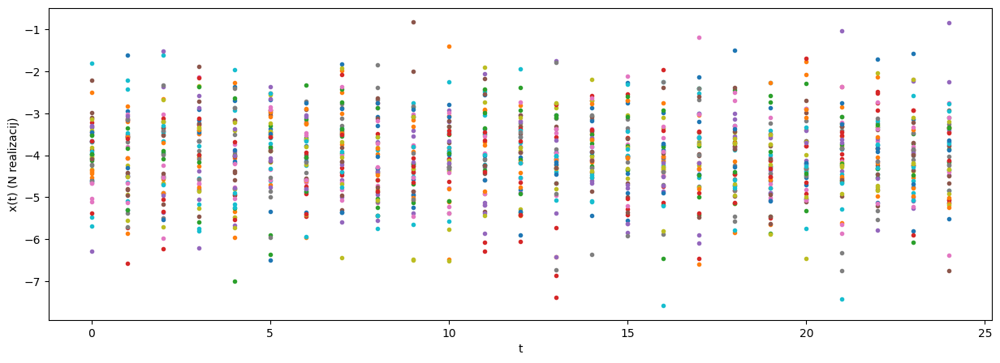
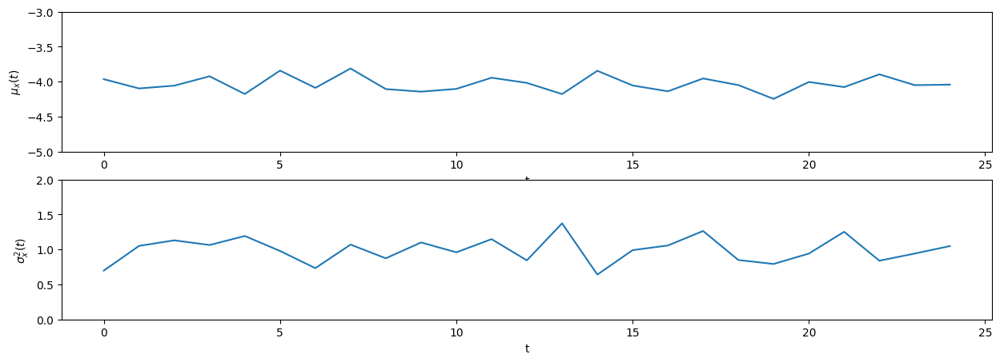
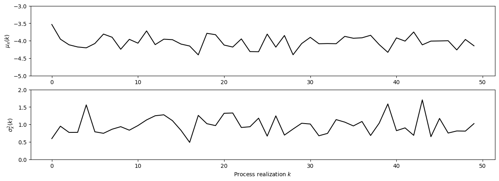
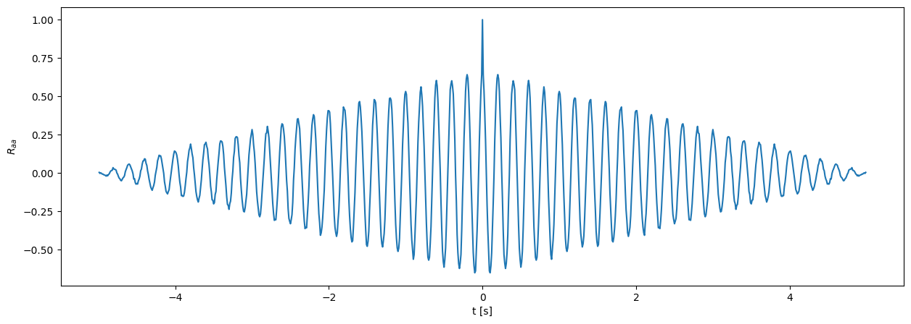
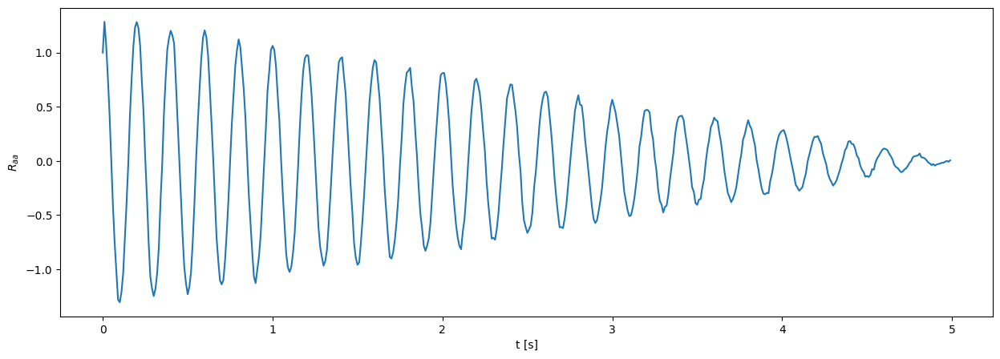
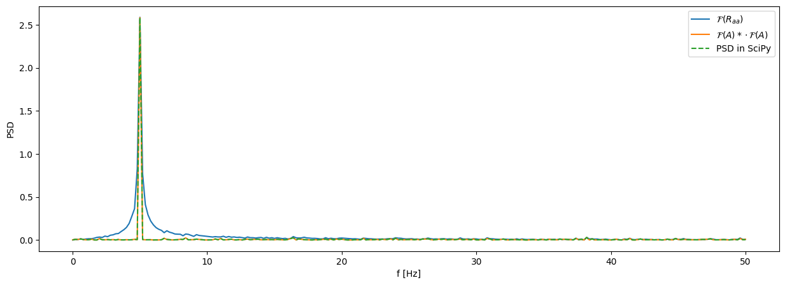

DFT and fundamentals of random processes#
Homework#
Task
Using the signal generator and the Arduino acquisition system, acquire a random signal with the parameters (mean value \(m\), standard deviation \(\sigma\)) from your assignment data. Perform the acquisition so that, when converting the acquired signal to the frequency domain, you obtain a spectrum over the given frequency range \([0, f_k]\) and with the frequency-domain resolution \(\Delta f\) from your assignment data.
You can download the LabVIEW signal acquisition program as a zip archive.
Prepare a short report in a Jupyter Notebook (3 to 10 code cells) that shows the assignment data, and presents and briefly comments on the following properties of the acquired signal:
the acquired frequency range and the frequency resolution,
an estimate of the probability density \(p(x)\) of the values of the acquired signal \(x(t)\),
the one-sided and two-sided auto power spectral density, \(G_{XX}\) and \(S_{XX}\),
the first four central statistical moments (\(m_1\), \(m_2\), \(m_3\), \(m_4\)) of the acquired signal.
Addendum:
Evaluate and comment on the stationarity and ergodicity of the random signal generated above (if needed, acquire the additional signals you need for this).
Numerically generate and comment on examples of a non-stationary Gaussian and a stationary non-Gaussian random signal (see for example pyExSi).
Submit the report in .pdf format (see the instructions for submitting homework).
Discrete Fourier transform#
We compute the Fourier transform of a discrete signal, \(x_n = x(n\,\Delta t)\). When we have a finite number of sampled data points (\(N\)) and \(n=[0,1,\dots,N-1]\), we use the discrete Fourier transform (DFT).
Note
Discrete Fourier transform:
It holds that \(X_k=X(k/(N\,\Delta t))\).
Since the DFT is periodic with \(1/\Delta t\) (\(X_k=X_{k+N}\)), only \(N\) terms need to be computed.
The module numpy.fft computes \(X_k\) for the discrete frequency points at \(k \in [-N/2, \dots, 0,\dots\,N/2-1]\) (in the case of an even number of points \(N\)).
Example 1
Let us look at the discretization of the frequency vector in the DFT of a signal sampled at times: \(t = [0, 1, 2, \dots, 9] s\):
t = np.arange(0, 10)
delta_t = t[1] - t[0]
n = len(t)
delta_t, n
(np.int64(1), 10)
np.fft.fftfreq(len(t), t[1]-t[0])
array([ 0. , 0.1, 0.2, 0.3, 0.4, -0.5, -0.4, -0.3, -0.2, -0.1])
np.fft.rfftfreq(len(t), t[1]-t[0])
array([0. , 0.1, 0.2, 0.3, 0.4, 0.5])
Fundamentals of random processes#
Processes that we cannot treat as deterministic are often modeled as random processes.
They are characterized by the fact that their actual values in time \(x(t)\) cannot be predicted exactly, but we can draw conclusions about the distribution of their values with a certain probability. We therefore define the probability density function, \(p(x)\), which gives the probability that a particular value \(x\) will occur in a sample of the random variable \(x(t)\).
It is often sensible to examine the properties of such signals in the frequency domain.
Example 2
A normally distributed random variable \(x\) with \(N=1000\) samples, mean value \(\mu = 5\) and standard deviation \(\sigma = 2\) represents a realization of N repetitions of a random event.
Let us estimate the first two central statistical moments of the probability density function (\(n = [1, 2]\)):
N = 1000
mu = 5
sigma = 2
x = np.random.randn(N)*sigma + mu
x_center = x - np.mean(x)
s_1 = np.mean(x_center)
s_1
np.float64(-4.369837824924616e-16)
s_2 = np.mean((x_center)**2)
s_2
np.float64(3.9597370279198336)
A more general random number generator in NumPy:
rng = np.random.default_rng()
y = rng.normal(loc=mu, scale=sigma, size=N)

The probability distribution does not have to be normal (Gaussian):
z = rng.weibull(a=2.5, size=N)


Note
A random process \(x(t)\) is stationary if the mean value and the covariance functions of the process are independent of time.
A random process \(x(t)\) is ergodic if the lower-order statistical properties of a single realization of the process in time (\(x(t)\)) are equal to the statistical properties of the ensemble of several realizations of the event \(x_k(t)\). We say that a single realization of the process is representative.
Example 3
We observe a random process \(x(t)\) with a normal probability distribution (\(\mu = -4\), \(\sigma = 1\)), defined at 25 time points \(t = [0, 1, \dots, 24]\). We record an ensemble of \(N=50\) realizations of the random process.
Let us observe the evolution of the mean value and the variance of the signal in time, \(\mu_x(t)\) and \(\sigma^2_x(t)\).
t = np.arange(25)
N = 50
mu = -4
sigma = 1
ansambel = []
for ponovitev in range(N):
ansambel.append(rng.normal(loc=mu, scale=sigma, size=len(t)))
ansambel = np.array(ansambel)
ansambel.shape # (50 realizations, 25 "time" points)
(50, 25)

Mean value and variance at each time instant of the process (calculated along the axis of realizations):
mu_t = np.mean(ansambel, axis=0)
var_t = np.mean((ansambel-np.mean(ansambel, axis=0))**2, axis=0)

Since the mean value and the variance of the random realizations at the same point of the process do not change with time, we can conclude that the process is stationary.
Mean value and variance of the individual realizations of the process (calculated along the time axis):
mu_ansambel = np.mean(ansambel, axis=1)
var_ansambel = np.mean((ansambel-np.mean(ansambel, axis=1)[:, None])**2, axis=1)

Since the mean value and the variance of the random process \(x(t)\) do not change over repeated realizations, and are equal to \(\mu_x(t)\) and \(\sigma^2_x(t)\) at each individual time, we can conclude that the process is ergodic.
Note
The autocorrelation function \(R_{xx}(\tau)\) is defined as:
and is equal to the autocovariance function in the case of a process with zero mean value.
Note
The auto power spectral density (PSD, Power Spectral Density) is the Fourier transform of the autocorrelation function of the signal:
For an ergodic process, we can compute it as:
Example 4
We observe a random process \(a(t)\), defined by:
where \(n(t)\) is random noise with a normal distribution (\(\mu=0\), \(\sigma=0.5\)).
Let us observe the autocorrelation function \(R_{aa}(t)\) and the power spectral density \(S_{aa}(f)\) of the signal \(a(t)\).
f = 5
T = 5
fs = 100
t = np.arange(fs*T) / fs
N = len(t)
a = np.sin(2*np.pi*f*t) + np.random.randn(len(t))*0.5
R_aa = np.correlate(a-np.mean(a), a-np.mean(a), mode='full') / N /np.std(a)**2 # autocorrelation function, normalized to the variance (R_aa[0] == 1.)

R_aa = R_aa[-len(a):] # remove the part with negative time lag, we get an array of length N
R_aa[1:] *= 2 # correct the energy with a factor of 2

G_aa_ = np.fft.rfft(R_aa) * 2 / fs # we do not divide by N, since R_aa is already normalized
G_aa_ *= np.std(a)**2 # multiply by the variance to get back physical units
A = np.fft.rfft(a) # we do not divide by N, since the normalization is done in the G_aa calculation
freq = np.fft.rfftfreq(len(a), 1/fs)
G_aa = np.conj(A) * A * 2 / fs / N
Computing the PSD in SciPy:
from scipy.signal import welch
f_scipy, G_aa_scipy = welch(a, fs=fs, scaling='density', window=np.ones_like(a))

Parseval’s theorem:
a.var(), np.trapezoid(np.abs(G_aa), freq)
(np.float64(0.7620473451185664), np.float64(0.7622392404512711))
Variance of the measurement in the homework
When measuring a random signal generated by the signal generator, you will typically observe a much lower standard deviation of the measured values than the one set on the signal generator.
The signal generator produces a random signal with a broadband distribution (bandwidth ~30 MHz). Since the analog-to-digital converter (ADC) of the Arduino samples the voltage over a finite time window (the time of one conversion is not infinitely short), it acts as a low-pass filter: only a part of the generator’s total power falls within this band, and the measured values are the average of the voltage over the ADC conversion time.
The phenomenon is related to Parseval’s theorem; the example below shows an estimate of the expected standard deviation of a signal measured in this way.
t_conversion = 104e-6 # approximate duration of a single ADC measurement [s]
BW_generator = 30e6 # frequency band of the signal generator [Hz] (SDG1032X)
sigma_set = 0.5 # example of the standard deviation set on the generator [V]
# since we sample only a narrow band of the entire bandwidth, the expected variance is proportionally lower:
BW_measurement = (1 / t_conversion) / 2 # Nyquist limit, given the ADC conversion time
sigma_expected_measured = sigma_set * np.sqrt(BW_measurement / BW_generator)
print(f"Expected sigma when sampling: {sigma_expected_measured:.4f} V")
Expected sigma when sampling: 0.0063 V